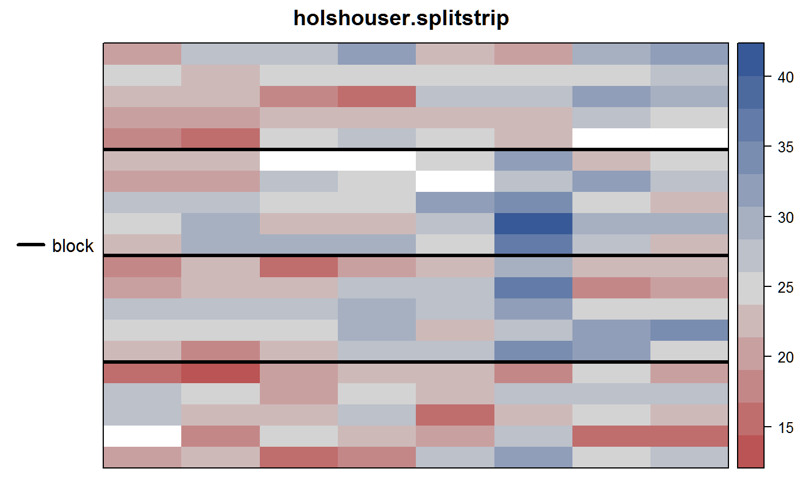
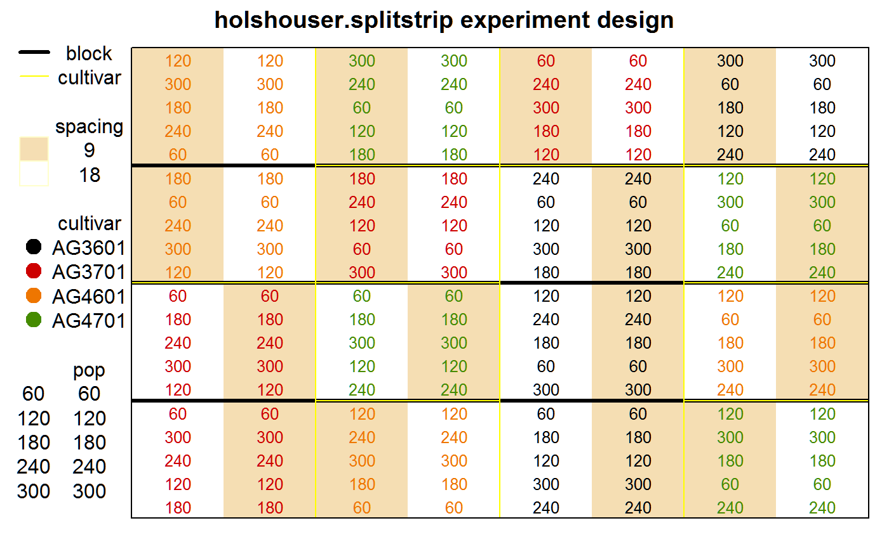

Split-strip-plot of soybeans
holshouser.splitstrip.RdSplit-strip-plot of soybeans
Format
A data frame with 160 observations on the following 8 variables.
blockblock factor, 4 levels
plotplot number
cultivarcultivar factor, 4 levels
spacingrow spacing
poppopulation (thousand per acre)
yieldyield
rowrow
colcolumn
Details
Within each block, cultivars were whole plots. Withing whole plots, spacing was applied in strips vertically, and population was applied in strips horizontally.
Source
Schabenberger, Oliver and Francis J. Pierce. 2002. Contemporary Statistical Models for the Plant and Soil Sciences. CRC Press, Boca Raton, FL. Page 493.
Used with permission of David Holshouser at Virginia Polytechnic.
Examples
library(agridat) data(holshouser.splitstrip) dat <- holshouser.splitstrip dat$spacing <- factor(dat$spacing) dat$pop <- factor(dat$pop) # Experiment layout and field trends libs(desplot) desplot(yield ~ col*row, data=dat, out1=block, # unknown aspect main="holshouser.splitstrip")desplot(spacing ~ col*row, data=dat, out1=block, out2=cultivar, # unknown aspect col=cultivar, text=pop, cex=.8, shorten='none', col.regions=c('wheat','white'), main="holshouser.splitstrip experiment design")# Overall main effects and interactions libs(HH) interaction2wt(yield~cultivar*spacing*pop, dat, x.between=0, y.between=0, main="holshouser.splitstrip")## Schabenberger's SAS model, page 497 ## proc mixed data=splitstripplot; ## class block cultivar pop spacing; ## model yield = cultivar spacing spacing*cultivar pop pop*cultivar ## spacing*pop spacing*pop*cultivar / ddfm=satterth; ## random block block*cultivar block*cultivar*spacing block*cultivar*pop; ## run; ## Now lme4. This design has five error terms--four are explicitly given. libs(lme4) libs(lucid) m1 <- lmer(yield ~ cultivar * spacing * pop + (1|block) + (1|block:cultivar) + (1|block:cultivar:spacing) + (1|block:cultivar:pop), data=dat)#> Warning: Model failed to converge with max|grad| = 0.00221987 (tol = 0.002, component 1)vc(m1) ## Variances match Schabenberger, page 498.#> grp var1 var2 vcov sdcor #> block:cultivar:pop (Intercept) <NA> 2.421 1.556 #> block:cultivar:spacing (Intercept) <NA> 1.245 1.116 #> block:cultivar (Intercept) <NA> 0.4508 0.6714 #> block (Intercept) <NA> 3.033 1.741 #> Residual <NA> <NA> 3.928 1.982## grp var1 var2 vcov sdcor ## block:cultivar:pop (Intercept)2.421 1.556 ## block:cultivar:spacing (Intercept) 1.244 1.116 ## block:cultivar (Intercept) 0.4523 0.6725 ## block (Intercept) 3.037 1.743 ## Residual 3.928 1.982